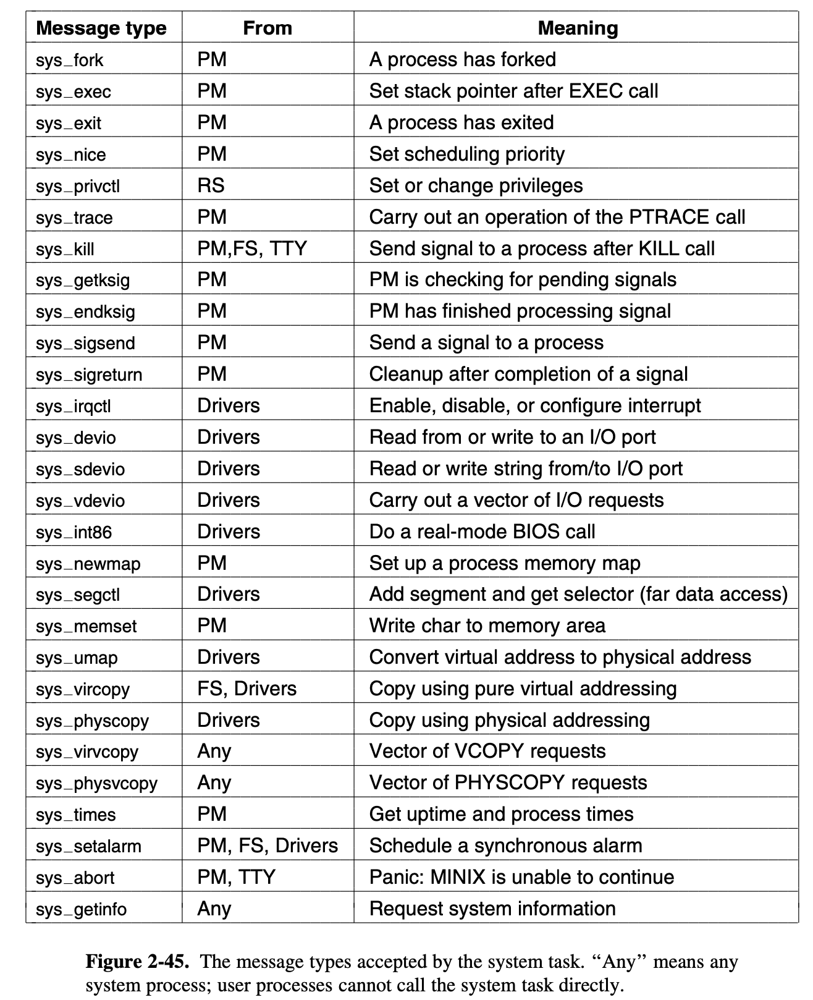

Operating Systems Design and Implementation Notes
7. System Task
By Jiawei Wang
Back to Chapter1, we use three notes to introduce 53 system calls of POSIX.
In a conventional operating system with a monolithic kernel, the term system call is used to refer to all calls for services provided by the kernel. In a sense, making a system call is like making a special kind of procedure call, only system calls enter the kernel (space) or other privileged operating system components and procedure calls do not.
Unlike in a modern UNIX-like operating system the POSIX standard describes the system calls available to processes. In Minix3 components of the operating system run in user space -- they are forbidden from doing actual I/O, manipulating kernel tables and doing other things operating system functions normally do.
To make the kernel as simple as possible. Minx3 only compile 28 nessary "System Call" in the kernel binary program. Which is shown in layer in Fig. 2-29, we call them System Task.

1. Calls in Minx3
Generally speaking. There are three kinds of "Calls" in Minix3:
System Call
We will still use the name "system call" for any of the POSIX-defined system calls (and a few MINIX extensions) listed in Fig. 1-9, but since user processes do not request services directly of the kernel. In MINIX 3, system calls by user processes are transformed into messages to server processes.
On the other words. Minix3 is still compatible with POSIX System Calls. But since most of the system components are running in kernel mode (Micro-Kernel), the kernel cannot put these 58 system calls into its binary program. The way that Minix3 do is: It create two more layers between user process and kernel. - Server Processes and Device Drivers.
System Task (Kernel Call)
Kernel calls cannot be made by user processes. In many cases a system call that originates with a user process results in a kernel call with a similar name being made by a server.
For instance, a fork system call by a user process goes to the process manager, which does some of the work. But a fork requires changes in the kernel part of the process table, and to complete the action the process manager makes a sys_fork call to the system task, which can manipulate data in kernel space.
The system task accepts 28 kinds of messages, shown in Fig. 2-45. Each of these can be considered a kernel call. All 28 kernel calls were complied into kernel/system directory.

IPC primitive (Trap)
Technically speaking, a third category of calls (besides system calls and kernel calls) should be distinguished. The message primitives used for interprocess communication such as send, receive, and notify can be thought of as system-call-like.
In MINIX 3 system calls by user processes are transformed into messages to server processes. Server processes communicate with each other, with device drivers, and with the kernel by messages.
2. Implementation of System Task
As you may have noticed in Fig. 2-43, when MINIX 3 starts up, the system task is at the head of the highest priority queue. So after the first restart(), the sys_task() function will be executed.
All functions related to System Task were in kernel/system.c
PUBLIC void sys_task()
{
/* Main entry point of sys_task. Get the message and dispatch on type. */
static message m;
register int result;
register struct proc *caller_ptr;
int s;
int call_nr;
int n = 0;
/* Initialize the system task. */
initialize();
while (TRUE) {
struct proc *restarting;
restarting = vmrestart_check(&m);
if(!restarting) {
int r;
/* Get work. Block and wait until a request message arrives. */
if((r=receive(ANY, &m)) != OK)
minix_panic("receive() failed", r);
}
sys_call_code = (unsigned) m.m_type;
call_nr = sys_call_code - KERNEL_CALL;
who_e = m.m_source;
okendpt(who_e, &who_p);
caller_ptr = proc_addr(who_p);
else {
result = (*call_vec[call_nr])(&m); /* handle the system call */
}
Just as the clock_task, the sys_task is also waiting for a message from other server or driver. Then do some verification. after that it will execute them by calling the functions (system task) in the call_vec.
Although this chapter's name is Process. Actually, we talked about the things of the system. Many of them will be used in the future chapters. Like I said before. Each part of the system is indivisible. Therefore, to understand a part of the hole system, we must have the corresponding knowledge in other part of this system.
The other part, which is the implementation of these Kernel Calls, we will discuss them in the future chapters. Since some of them related to the Process Manager, which we will introduce its implementation in Chapter4. Some of them were called by the File System, which is the content of Chapter5.